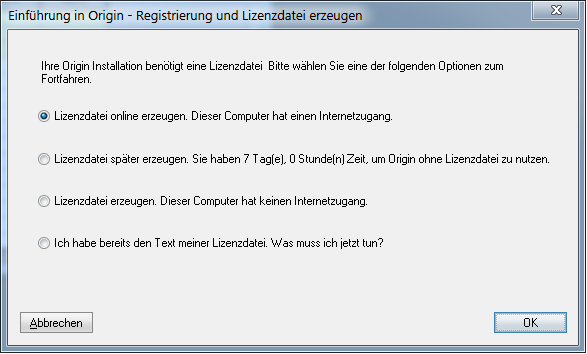
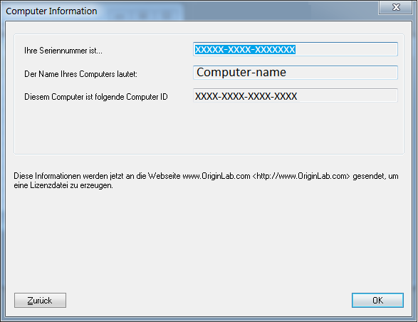
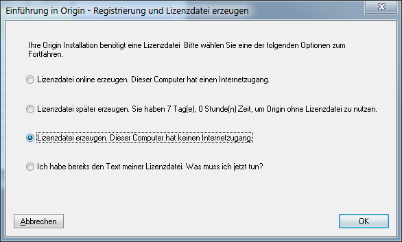
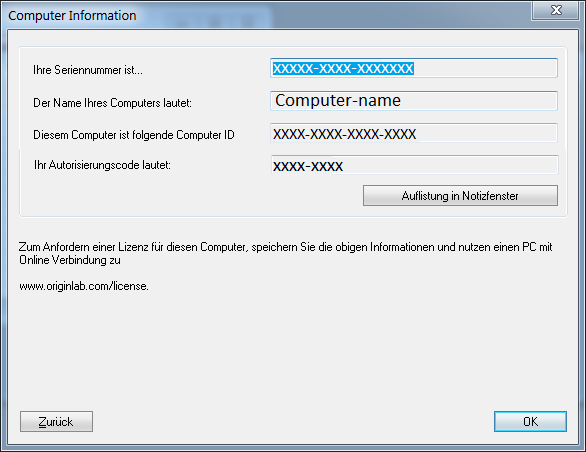

Lizenzaktivierung für rechnergebundene Einzellizenzen (Node-Locked)
Single-NodeLocked-Activation
- Um den Lizenzprozess einer Node-Locked-Lizenz abzuschließen, müssen Sie mit einem Konto mit Administratorrechten an dem Computer angemeldet sein.
- Wenn das Betriebssystem Windows 10, 8.1, 8, 7 oder Vista ist, müssen Sie mit der rechten Maustaste auf das Origin-Programmsymbol klicken und die Option Als Administrator ausführen auswählen.
- Sobald der Lizenzprozess abgeschlossen ist, wird die Lizenz auf diesem Computer gespeichert. Internetzugang ist dann nicht mehr erforderlich.
Falls Ihr Computer Internetzugriff hat[bearbeiten]
 Sehen Sie das Video-Tutorial an - Rechnergebundenes Origin (Node-Locked) auf einem Computer mit Internetzugriff lizenzieren
Sehen Sie das Video-Tutorial an - Rechnergebundenes Origin (Node-Locked) auf einem Computer mit Internetzugriff lizenzieren
- Starten Sie Origin. Es wird ein Lizenzierungsdialog geöffnet, der Optionen zum Anfordern Ihrer Lizenz enthält.
- Wählen Sie die erste Option Jetzt eine Lizenzdatei online anfordern. Dieser Computer hat Internetzugriff. Klicken Sie dann auf OK.
- 
- Ein Dialog Computerinformationen wird geöffnet und zeigt Ihre Computerdetails, die an die OriginLab-Webseite weitergegeben werden. Klicken Sie auf OK.
- 
- Ihr Webbrowser wird auf einer Anmeldungsseite der OriginLab-Webseite geöffnet. Melden Sie sich an, wenn Sie bereits über ein Konto verfügen, oder erstellen Sie sich ggf. ein Konto.
- Nachdem Sie sich angemeldet haben, werden Sie gebeten, zwischen einer "Büro"- oder "Notebook"-Lizenz zu entscheiden. Beachten Sie, dass "Notebook"-Lizenzen mit der Softwarepflege ablaufen. Klicken Sie auf Weiter.
- Ihre Lizenz wird erzeugt und auf der Webseite angezeigt. Kopieren Sie den gesamten Lizenztext in das Textfeld.
- Gehen Sie jetzt zurück zu Origin und fügen Sie den Lizenztext in den Dialog Lizenz eingeben ein. Klicken Sie auf OK.
Falls Ihr Computer keinen Internetzugriff hat[bearbeiten]
Sehen Sie das Video-Tutorial an - Rechnergebundenes Origin (Node-Locked) auf einem Computer ohne Internetzugriff lizenzieren
Wenn Ihr Computer keinen Internetzugriff hat, benötigen Sie Zugriff auf einen anderen Computer, der Zugang zum Internet besitzt. Sie können eine Lizenz über den Computer mit Internetzugriff abrufen. Dazu benötigen Sie die ID des Origin-Computers, den Authorization Code und die Origin-Seriennummer des Computers ohne Internetzugang.
- Starten Sie Origin. Es wird ein Lizenzierungsdialog geöffnet, der Optionen zum Anfordern Ihrer Lizenz enthält.
- Wählen Sie die dritte Option Jetzt eine Lizenzdatei online anfordern. Dieser Computer hat keinen Internetzugang. Klicken Sie auf OK.
- 
- Der Dialog, der geöffnet wird, zeigt Origin-Seriennummer, Computername, Computer-ID und Authorization Code an. Klicken Sie auf Dump to Notepad, um diese Informationen als .txt-Datei zu speichern oder sie zu notieren, um die Lizenz zu erhalten.
- 
- Wechseln Sie zu einem Computer mit Internetzugang. Öffnen Sie einen Webbrowser auf der Seite www.originlab.com.
- Klicken Sie auf den Link SERVICES: Origin lizenzieren/registrieren im Menü Support. Melden Sie sich an, wenn Sie bereits über ein Konto verfügen, oder erstellen Sie sich ggf. ein Konto.
- Wenn Sie Origin zum ersten Mal mit Ihrem Konto registrieren bzw. lizenzieren, aktivieren Sie auf der Seite, die sich öffnet, nachdem Sie sich angemeldet haben, die Option Ich möchte meine Origin-Software registrieren und eine Lizenzdatei für einen Computer anfordern.. Klicken Sie auf Weiter. Wählen Sie Ihre Seriennummer und Version bzw. geben Sie sie ein und klicken Sie auf Fortfahren.
Wenn Sie zuvor bereits Origin mit Ihrem Konto registriert oder lizenziert haben, wird Ihnen die Webseite Ihrer Origin-Produktregistrierung nach der Anmeldung angezeigt.
- Um ein Lizenz für eine neue Seriennummer abzurufen, klicken Sie auf die Schaltfläche Registrierung oder Generierung einer Lizenzdatei und wählen Sie dann Ich möchte meine Origin-Software registrieren und eine Lizenzdatei für einen Computer anfordern.. Klicken Sie auf Weiter. Geben Sie Ihre Origin-Seriennummer und Version ein bzw. wählen Sie sie aus und klicken Sie auf Fortfahren.
- Um ein Lizenz für eine neue Version abzurufen, die nicht in Ihrer Lizenztabelle gezeigt wird, wie ein Upgrade-Benutzer, der seine neue Version lizenzieren möchte, klicken Sie auf die Schaltfläche Registrierung oder Generierung einer Lizenzdatei und wählen Sie dann Ich möchte meine Origin-Software registrieren und eine Lizenzdatei für einen Computer anfordern.. Klicken Sie auf Weiter. Geben Sie Ihre Origin-Seriennummer und Version ein bzw. wählen Sie sie aus und klicken Sie auf Fortfahren.
- Um eine Lizenz für eine Seriennummer und Version abzurufen, die in Ihrer Lizenztabelle gezeigt wird, klicken Sie auf den Link der Seriennummer (für diese Version) in der Tabelle. Klicken Sie auf der aufgerufenen Seite des Lizenzabrufverlaufs auf die Schaltfläche Eine Lizenz für einen neuen Computer anfordern, die sich oberhalb der Tabelle mit den Lizenzdetails befindet.
- Geben Sie als Nächstes die ID des Origin-Computers, den Computernamen und den Authorization Code ein und klicken Sie auf Senden.
- Sie werden gebeten, zwischen einer "Büro"- oder "Notebook"-Lizenz zu wählen. Beachten Sie, dass die "Notebook"-Lizenz mit der Softwarepflege abläuft.
- Ihre Lizenz wird erzeugt und auf der Webseite angezeigt. Kopieren Sie den gesamten Lizenztext in das Textfeld.
- Öffnen Sie einen Texteditor wie Notepad und fügen Sie die Lizenz in Notepad ein. Speichern Sie diese Textdatei auf einem USB-Stick oder einer CD.
- Gehen Sie jetzt zu Ihrem Origin-Computer zurück. Wenn Sie noch immer den Lizenzdialog mit den Computerdetails angezeigt bekommen, klicken Sie auf die Schaltfläche Zurück, um zum Hauptlizenzdialog zurückzukehren. Wählen Sie im Hauptlizenzdialog Ich halte meine Lizenzdatei bzw. meinen Lizenztext bereit. Was ist der nächste Schritt? Klicken Sie auf OK.
- Kopieren Sie den Lizenztext und fügen Sie ihn in den Dialog Lizenz eingeben ein. Klicken Sie auf OK.